项目编号：PXXXXXXXX
项目名称：XXXXXX
结题编号：PXXXXXXXX_Homo_sapiens
结题日期：20250917210102
售后电话：400-658-1585先按3再按2，语音提示为：lncRNA、Small RNA、circRNA产品请按2
售后邮箱：service-nsRNA@novogene.com
重要结果汇总
1.该项目鉴定到的circRNA的个数为：
| Types | Total |
|---|---|
| circRNA | 96 |
2. 每个差异比较组合差异（DIFF）circRNA个数，以及上调（UP）、下调（DOWN）的circRNA个数分别为：
| compare | all | up | down | threshold |
|---|---|---|---|---|
| group1vsgroup2 | 1 | 1 | 0 | DESeq2 pvalue<=0.05 |log2FoldChange|>=0.0 |
| group2vssample1 | 0 | 0 | 0 | DESeq2 pvalue<=0.05 |log2FoldChange|>=0.0 |
| sample1vssample5 | 1 | 1 | 0 | edgeR pvalue<=0.05 |log2FoldChange|>=1.0 |
一、项目背景及样本信息
1 项目背景：转录组的研究意义
LncRNA（long non-coding RNA）即长链非编码RNA，是一类长度大于200nt并且一般不编码蛋白质的RNA分子。长久以来，它们被当作无用的转录物因而被忽视[1]。然而近十年来，越来越多的研究证明，其在真核生物尤其是哺乳动物中广泛地存在，并起到重要的生物学作用。
与mRNA相同的是，lncRNA同样由细胞中的RNA聚合酶II转录得到；不同的是，其转录丰度和稳定性都较低，并且大都不具有poly A尾的结构。从功能上看，lncRNA的主要通过顺式和反式两种调节方式，分别作用于靶基因的转录水平、转录后水平、翻译水平及表观水平等，起到调控靶基因的表达水平的作用[2]。在生物体中，lncRNA一般具有较强的组织和细胞特异性，并且在最近的研究中也被发现与物种间差异以及发育有很强的关联性。此外，lncRNA也被发现在癌症、免疫缺陷等众多疾病的致病机制中扮演着重要角色[1]。
环状 RNA（circular RNA，circRNA）长度在 200nt 以上,主要由 pre-mRNA 通过可变剪切加工产生；5’端和 3’端共价结合形成闭合结构，广泛存在与动物和植物中。特殊的环状结构使其能够逃逸 RNA 酶的降解，增强体内稳定性。此外，其具有一定的保守性（低于 mRNA）和细胞或组织类型特异性。
二、建库测序流程
从RNA样品提取到最终数据获得，样品检测、建库、测序等每一环节都会直接影响数据的数量和质量，从而影响后续信息分析的结果。为从源头保证测序数据准确可靠，诺禾致源承诺在数据的所有生产环节都严格把关，从根源上确保高质量数据的产出。建库测序的流程图如下：
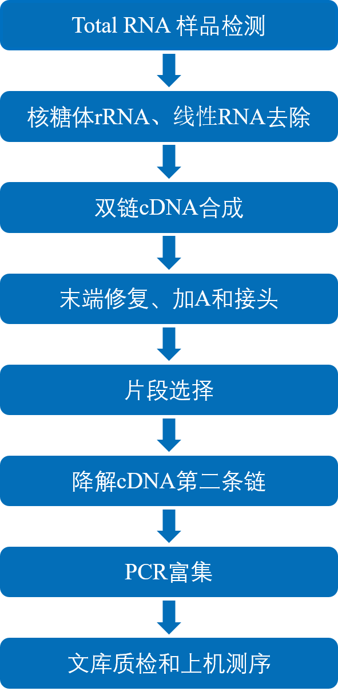
图1 建库测序流程图
1 RNA样品检测
从组织或细胞中提取RNA，随后对RNA样品进行严格质控，质控标准主要包括以下3个方面：
(1) 琼脂糖凝胶电泳：分析样品RNA完整性及是否存在DNA污染；
(2) Nanodrop：进行初步定量，检测RNA浓度及纯度（OD260/280及OD260/230）；
(3) Agilent 2100 bioanalyzer：精确检测RNA完整性。
2 文库构建
诺禾致源采用去除核糖体RNA的方法（circRNA建库增加去线性RNA过程）构建链特异性文库[3]。 首先，从总RNA中去除核糖体RNA，随后使用RNase R酶去除线性RNA，剩余circRNA打断成250~300 bp的短片段，以片段化的RNA为模板，随机寡核苷酸为引物合成cDNA第一条链，随后以dNTPs（dUTP、dATP、dGTP和dCTP）为原料合成cDNA第二条链。 纯化后的双链cDNA经过末端修复、加A尾并连接测序接头[注]，用AMPure XP beads筛选350~400 bp左右的cDNA。使用USER酶降解含U的cDNA第二链，最后进行PCR扩增并获得文库。链特异性文库具有诸多优势，如相同数据量下可获取更多有效信息；能获得更精准的基因定量、定位与注释信息等。建库原理如下图：
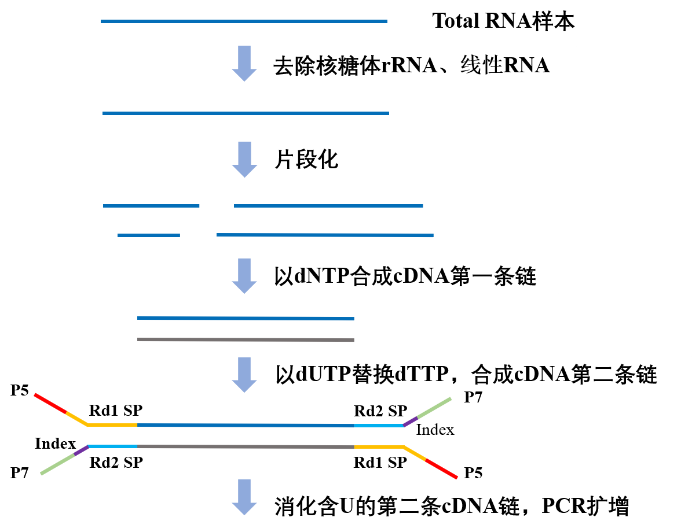
图2 文库构建流程
注：接头（Adapter），包括P5/P7、index和Rd1 SP/Rd2 SP。P5/P7，用于测序仪进行桥式PCR的过程；Index，标签序列，用来区分不同文库信息；Rd1 SP/Rd2 SP（sequence primer），测序引物结合区域，测序过程理论上由Rd1/Rd2向后开始进行。
我们在建库过程中消化了线性RNA，之后将片段随机打断为250-300bp，通过片段长度选择，理论上只会保留circRNA片段。
3 库检
先用 Qubit 初步定量，稀释文库至 1ng/ul；再用 Agilent 2100 bioanalyzer 检测对文库的插入片段长度（insert size）进行检测，insert size 大约分布在 250~300 bp 左右符合预期。Insert size符合预期后，使用 qPCR方法对文库的有效浓度进行准确定量，文库的有效浓度为>2nM,保证了样本文库的质量
4 上机测序
库检合格后，根据文库的有效浓度及数据产出需求pooling后进行Illumina PE150测序。PE150（Pair end 150 bp）指高通量双端测序，每端各测150 bp。在构建的小片段文库中，Insert cDNA，即插入片段是直接测序的单位。双端测序是将每条插入片段的两端进行测序的方法，由于插入片段的长度分布已知，双端测序时不仅可以获得片段两端的序列，也可获得这两段序列之间的长度，从而便于后续组装和比对。
测序的基本原理是边合成边测序（Sequencing by Synthesis）。在测序的flow cell中加入四种荧光标记的dNTP、DNA聚合酶以及接头引物进行扩增，在每一个测序簇延伸互补链时，每加入一个被荧光标记的dNTP就能释放出相对应的荧光，测序仪通过捕获荧光信号，并通过计算机软件将光信号转化为测序峰，从而获得待测序片段的序列信息。
三、生物信息分析流程
测序获得原始测序序列（Raw data）后进入信息分析流程，流程分为两个阶段：
1）测序数据质量评估：主要通过对测序错误率、数据量、比对率等进行统计，评估建库测序是否达到了标准，符合标准则进行后续的分析，否则需重新建库或加测；
2）信息挖掘及分析：CircRNA 信息分析流程如下:
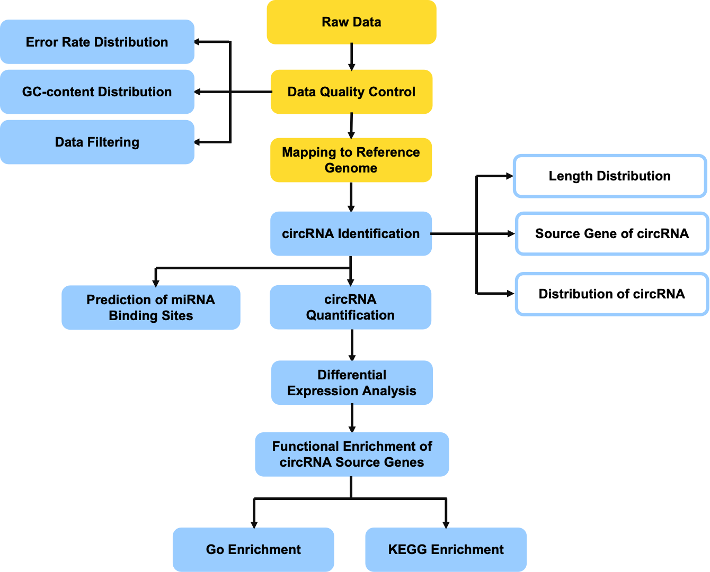
图3 信息分析流程图
四、标准分析结果
RNA-seq标准分析过程主要包括质控，比对，拼接，筛选，定量，差异显著性分析，功能富集等环节。RNA-seq分析的核心是基因表达差异的显著性，使用统计学方法比较两个或多个条件下的基因表达差异（例如，处理与对照），从中找出与条件相关的差异基因，然后进一步分析这些差异基因的生物学意义。
其中，环状RNA（Circular RNAs，circRNA）是一类不具有5' 末端帽子和3' 末端poly(A)尾巴，并以共价键形成环形结构的非编码RNA分子。circRNA是由非经典剪接方式进行反向剪接而形成,不能编码蛋白，且保守性较低。在肿瘤研究中应用广泛，比如肿瘤发生发展、迁移、侵袭、耐药等都和lncRNA相关。如前所述，通过去核糖体链特异性文库得到的RNA主要包括lncRNA、mRNA、circRNA等，针对生物体内转录调控机制研究所需，我们主要分析mRNA、lncRNA及circRNA。
1 测序数据质量评估(结果文件夹: Results/QC)
测序数据的产生经过了RNA提取、建库、测序多个步骤，这些步骤会产生少许低质量或者无效数据，比如建库阶段会存在建库长度的偏差，测序阶段会出现测序错误的情况。所以需要对下机得到的原始数据进行质量控制，保证后续分析的准确性。
1.1 原始序列数据
高通量测序（如Illumina PE150/SE50）下机得到的原始图像文件经CASAVA碱基识别转化为测序读段（Sequenced Reads），以FASTQ格式存储。FASTQ是一种存储生物序列及相应质量值的常用文本格式，每条测序读段由四行组成，如下图所示：
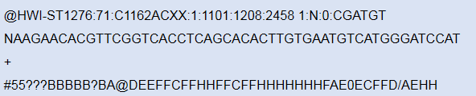
Illumina测序标识符详细信息如下：
| 标示符 | 含义 |
|---|---|
| HWI-ST1276 | Instrument – unique identifier of the sequencer |
| 71 | run number – Run number on instrument |
| C1162ACXX | FlowCell ID – ID of flowcell |
| 1 | LaneNumber – positive integer |
| 1101 | TileNumber – positive integer |
| 1208 | X – x coordinate of the spot. Integer which can be negative |
| 2458 | Y – y coordinate of the spot. Integer which can be negative |
| 1 | ReadNumber - 1 for single reads; 1 or 2 for paired ends |
| N | whether it is filtered - NB：Y if the read is filtered out, not in the delivered fastq file, N otherwise |
| 0 | control number - 0 when none of the control bits are on, otherwise it is an even number |
| CGATGT | Illumina index sequences |
1.2 测序数据过滤
测序获得的原始数据中包含少量带有测序接头或测序质量较低的reads，如图1.1所示。为了保证数据分析的质量及可靠性，需要对原始数据进行过滤，过滤内容如下：
(1) 去除带接头（adapter）的reads；
(2) 去除N（N表示无法确定碱基信息）的比例大于0.002的reads；
(3) 当单端read中含有的低质量碱基数超过该条read长度比例的50%时，需要去除此对paired reads。
各样本的测序数据过滤情况见结果文件：1.QC/Classfication，如下图所示。


图1.1 原始数据组成
不同颜色比例分别代表不同组分的比例，(1) Adapter related：带接头的reads；(2) Containing N：含有未知碱基的reads；(3) Low quality：测序质量低的reads；(4) Clean reads：通过数据过滤的reads。
1.3 测序错误率分布
测序过程本身存在发生机器错误的可能性，测序错误率分布检查可以反映测序数据的质量，序列信息中每个碱基的测序质量值保存在FASTQ文件中，若reads的碱基质量值用QPhred表示，则可计算测序错误率 e=10(-QPhred/10) 或表示为 QPhred=-10log10(e)。Illunima Casava 1.8版本碱基识别与Phred分值之间的简明对应关系如下表所示。
表1.1 Illumina Casava 1.8版本碱基识别与Phred分值之间的简明对应关系
| Phred分值 | 不正确的碱基识别 | 碱基正确识别率 | Q-sorce |
|---|---|---|---|
| 10 | 1/10 | 90% | Q10 |
| 20 | 1/100 | 99% | Q20 |
| 30 | 1/1000 | 99.9% | Q30 |
| 40 | 1/10000 | 99.99% | Q40 |
测序错误率与碱基质量有关，受测序仪本身、测序试剂、样品等多个因素共同影响。对于RNA-seq技术，测序错误率分布具有两个特点：
(1) 测序错误率会随着测序序列（Sequenced Reads）长度的增加而升高，这是由于测序过程中化学试剂的消耗而导致的，并且为Illumina高通量测序平台都具有的特征[4]。
(2) 前几个碱基的位置也会发生较高的测序错误率，是因为在RNA-seq建库过程中反转录需要随机引物，推测前几个碱基测序错误率较高的原因是随机引物碱基和RNA模版的不完全结合[4]。
各样本测序错误率分布见结果文件：1.QC/Errorrate，如下图所示。


图1.2 测序错误率分布图
测序片段不同碱基位置错误率分布图，其中横坐标为 reads 的碱基位置，纵坐标为单碱基错误率。
测序错误率分布检查用于检测在测序长度范围内，有无某些位置的碱基存在异常的高错误率，例如若Read1或Read2中间位置的碱基测序错误率显著高于其他位置，则说明可能存在异常碱基。
1.4 GC含量分布
各样本GC含量分布见结果文件：1.QC/GC，如下图所示。
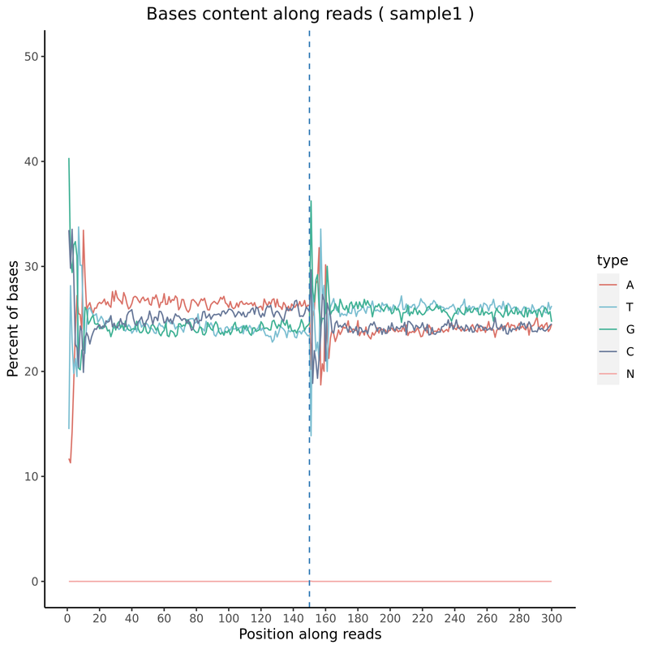
图1.3 GC含量分布图
横坐标为reads的碱基位置，纵坐标为单碱基所占的比例，不同颜色代表不同的碱基类型
1.5 数据质量汇总
经过原始数据过滤、测序错误率检查及GC含量分布检查，获得后续分析使用的clean reads，数据汇总如表1.2所示。
各样本数据质量汇总见结果文件：1.QC/Datastat，如下图所示。
表1.2 数据质量汇总
| sample | library | raw_reads | raw_bases | clean_reads | clean_bases | error_rate | Q20 | Q30 | GC_pct |
|---|---|---|---|---|---|---|---|---|---|
| sample1 | BRRL220000060-1A | 5e+05 | 0.07G | 480314 | 0.07G | 0.03 | 97.86 | 94.18 | 49.82 |
| sample2 | BRRL220000061-1A | 5e+05 | 0.07G | 477718 | 0.07G | 0.03 | 97.61 | 93.7 | 46.51 |
| sample3 | BRRL220000062-1A | 5e+05 | 0.07G | 462782 | 0.07G | 0.02 | 98.33 | 95.27 | 53.79 |
| sample4 | BRRL220000063-1A | 5e+05 | 0.07G | 486272 | 0.07G | 0.03 | 97.91 | 94.18 | 49.05 |
| sample5 | BRRL220000064-1A | 5e+05 | 0.07G | 483866 | 0.07G | 0.02 | 98 | 94.58 | 51.21 |
| sample6 | BRRL220000065-1A | 5e+05 | 0.07G | 485638 | 0.07G | 0.02 | 98 | 94.47 | 50.33 |
| sample7 | BRRL220000066-1A | 5e+05 | 0.07G | 486412 | 0.07G | 0.02 | 98.01 | 94.58 | 50.29 |
1.6 数据产出及质控讲解视频
链接: https://pan.baidu.com/s/1mV7hLr0tMsjnEmViCPQCZw 提取码: 9y2t
2 比对分析(结果文件夹: Results/Mapping)
将有效测序数据（clean reads）比对到基因组或转录组是后续分析的基础，诺禾致源可采用Tophat2（http://tophat.cbcb.umd.edu）、Hisat2（http://ccb.jhu.edu/software/hisat2）、STAR（http://code.google.com/p/rna-star）软件对RNA-Seq测序数据进行比对分析[5]。Hisat2是经典比对软件Tophat2的作者推荐的升级类软件，mapping率高且找到 Junction reads的正确率高，因此我们默认采用Hisat2[6]。
比对输出结果一般为标准的SAM文件，由sanger制定，是一种以TAB为分隔符的文本格式，主要用于测序序列比对到基因组上的结果展示。BAM文件是SAM文件的二进制格式，因其占据存储资源小，运算速度快，很多比对软件均以BAM格式作为标准输出，利用samtools工具可查看BAM文件的具体内容。
2.1 比对情况统计
利用比对软件将测序得到的clean reads比对到到参考基因组上，统计其可以mapping到参考基因组的的有效数据，并进一步进行mapping率等的统计。
各样本比对情况见结果文件：2.Mapping/Mapstat/MapStat.xls，如下图所示。
表2.1 所有样本比对情况一览表
| sample | total_reads | total_map | unique_map | multi_map | read1_map | read2_map | positive_map | negative_map | splice_map | unsplice_map | proper_map |
|---|---|---|---|---|---|---|---|---|---|---|---|
| sample1 | 480314 | 453531(94.42%) | 430662(89.66%) | 22869(4.76%) | 216335(45.04%) | 214327(44.62%) | 215122(44.79%) | 215540(44.87%) | 71071(14.8%) | 359591(74.87%) | 415822(86.57%) |
| sample2 | 477718 | 456027(95.46%) | 439982(92.1%) | 16045(3.36%) | 220547(46.17%) | 219435(45.93%) | 219903(46.03%) | 220079(46.07%) | 64482(13.5%) | 375500(78.6%) | 426238(89.22%) |
| sample3 | 462782 | 423176(91.44%) | 352428(76.15%) | 70748(15.29%) | 176730(38.19%) | 175698(37.97%) | 176376(38.11%) | 176052(38.04%) | 148214(32.03%) | 204214(44.13%) | 344656(74.47%) |
| sample4 | 486272 | 469574(96.57%) | 423302(87.05%) | 46272(9.52%) | 212176(43.63%) | 211126(43.42%) | 211508(43.5%) | 211794(43.55%) | 85758(17.64%) | 337544(69.41%) | 410712(84.46%) |
| sample5 | 483866 | 468589(96.84%) | 398227(82.3%) | 70362(14.54%) | 199658(41.26%) | 198569(41.04%) | 199100(41.15%) | 199127(41.15%) | 114170(23.6%) | 284057(58.71%) | 388890(80.37%) |
| sample6 | 485638 | 470517(96.89%) | 413351(85.12%) | 57166(11.77%) | 207380(42.7%) | 205971(42.41%) | 206680(42.56%) | 206671(42.56%) | 121404(25.0%) | 291947(60.12%) | 402642(82.91%) |
| sample7 | 486412 | 470652(96.76%) | 413995(85.11%) | 56657(11.65%) | 207472(42.65%) | 206523(42.46%) | 206973(42.55%) | 207022(42.56%) | 110760(22.77%) | 303235(62.34%) | 403226(82.9%) |
2.2 基因组区域分布
根据比对结果，分别统计reads在基因组外显子区域，内含子区域以及基因间区所占的比例。比对到内含子区域的reads可能来源于前体mRNA或可变剪接事件滞留的内含子。比对到基因间区的reads，可能来源于ncRNA或少许DNA片段污染[7]。所有样本的测序reads在基因组区域分布情况如图2.1所示。
各样本基因组区域分布图见结果文件：2.Mapping/Mapregion，如下图所示。


图2.1 reads在基因组不同区域的分布
reads在基因组不同区域的分布图，不同颜色代表不同的基因组区域，其中：（1）exonic：reads 在外显子区域的比例；（2）intronic：reads 在内含子区域的比例；（3）intergenic：reads 在基因间区的比例。
3 CircRNA 鉴定(结果文件夹: Results/CircRNA/CircNovel)
find_circ 与 CIRI 是目前两款最常用circRNA鉴定软件。
find_circ[22]鉴定 circRNA的基本原理是从没有比对到参考序列的 reads 的两端各提取 20-nt 的 anchor 序列，将每一对 anchor 序列再次比对参考序列，如果 anchor 序列的 5' 端比对到参考序列（起始与终止位点分别记为 A3，A4），同时该 anchor 序列的 3' 端比对到此位点的上游（起始与终止位点分别记为 A1，A2），并且在参考序列的 A2 到 A3 之间存在剪接位点（GT-AG），则将此 read 作为候选 circRNA。最后将 read count 大于等于 2 的候选 circRNA 作为鉴定的 circRNA。
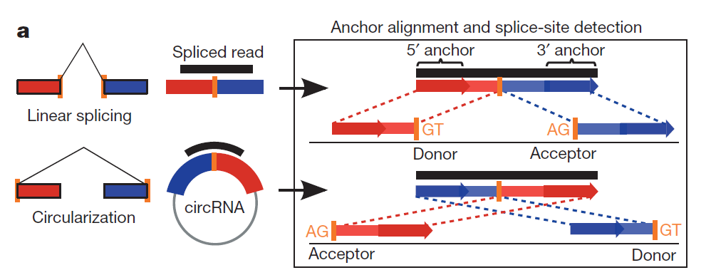
图3.1 find_circ 鉴定原理图
CIRI[23]首先是对sam文件中的CIGAR值进行分析的，从sam文件中扫描PCC信号（paired chiastic clipping signals），然后基于PEM和GT-AG信号过滤Junction reads,最后基于DM算法检测unbalanced junction reads,进一步过滤和阻止同源基因相似性以及重复序列造成的假阳性。
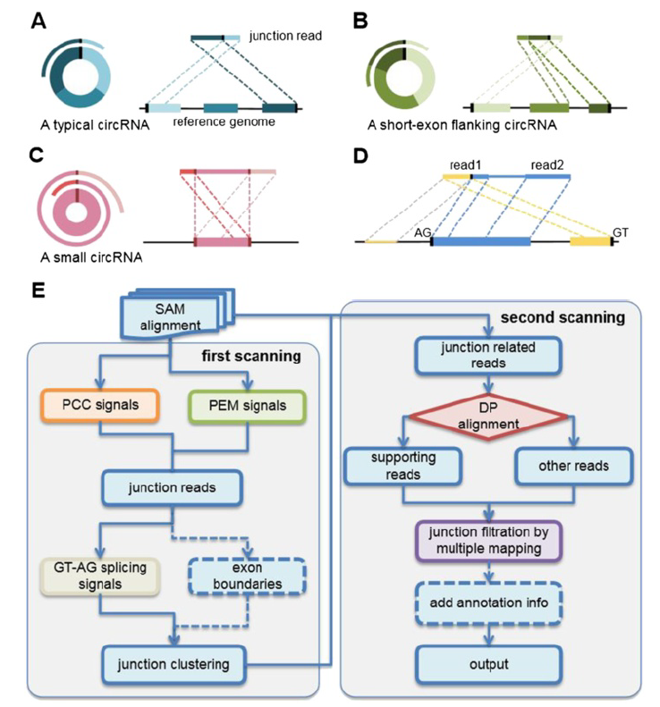
图3.2 CIRI 鉴定流程图
诺禾致默认将选择两款软件联合分析，提高circRNA鉴定的准确性。但由于软件本身的局限性、物种或样品特殊性等原因，会存在一款软件无法鉴定到circRNA的情况。因此诺禾致源会依据项目的实际情况进行软件的选择。
circRNA鉴定结果见结果文件：10.CircRNA/10.1.CircNovel/novel_circRNA_output/novel_circRNAs.xls，如下图所示。
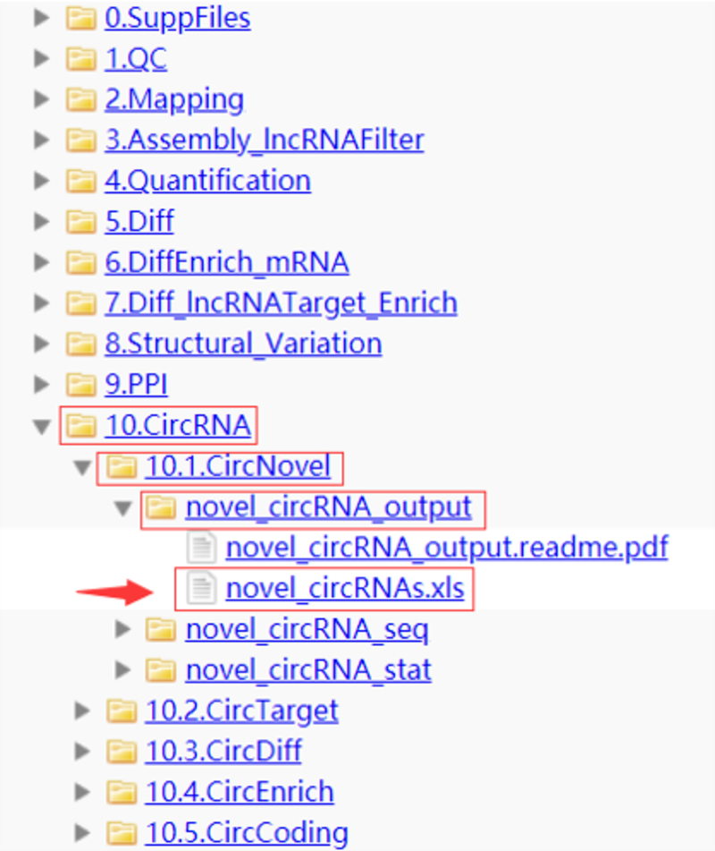
3.1 CircRNA 鉴定结果
CircRNA 鉴定的部分结果见下表：
表3.1 CircRNA 鉴定结果展示（部分）
| circRNA_ID | Chr | start | end | strand | full_length | spliced_length | gene_id | feature | samples | junction_read | non_junction_read | source_gene_name |
|---|---|---|---|---|---|---|---|---|---|---|---|---|
| hsa_circ_0003302 | 11 | 121045673 | 121060085 | + | 14412 | 973 | ENSG00000285509;ENSG00000154114; | exon:121045674-121045823,exon:121047528-121047667,exon:121059969-121060085 | sample3,sample7 | 5,3 | 0,3 | AP000646.1;TBCEL |
| hsa_circ_0000347 | 11 | 86011029 | 86031611 | - | 20581 | 635 | ENSG00000073921; | exon:86011030-86011136,exon:86012281-86012392,exon:86026292-86026367,exon:86031469-86031611 | sample1,sample3,sample4,sample5,sample6,sample7 | 4,7,2,2,3,5 | 2,9,13,8,6,16 | PICALM |
| hsa_circ_0000344 | 11 | 77683709 | 77693611 | - | 9902 | 350 | ENSG00000048649; | exon:77683710-77683819,exon:77685105-77685159,exon:77691159-77691238,exon:77693507-77693611 | sample2,sample3,sample4,sample5 | 2,4,3,2 | 3,0,0,1 | RSF1 |
| hsa_circ_0023557 | 11 | 74122987 | 74133557 | - | 10570 | 410 | ENSG00000168014; | exon:74133425-74133557 | sample3 | 3 | 0 | C2CD3 |
3.2 CircRNA 长度分布
circRNA长度分布图见结果文件：10.CircRNA/10.1.CircNovel/novel_circRNA_stat/circRNA_length_distribution/length_plot_quantile_100.pdf，如下图所示。

所有样本的 circRNA 的长度分布见下图:

图3.3 circRNA 的长度分布
横坐标circRNA长度；纵坐标：该长度circ的频数
3.3 CircRNA 来源统计
circRNA 可以来源于 exon 或 intron 的剪接，还有部分来源于intergenic,下图统计了所有样本的 circRNA 的来源:
circRNA来源分布图见结果文件：10.CircRNA/10.1.CircNovel/novel_circRNA_stat/ircRNA_genomic_feature/plot_novel_genomic_feature.pdf，如下图所示。
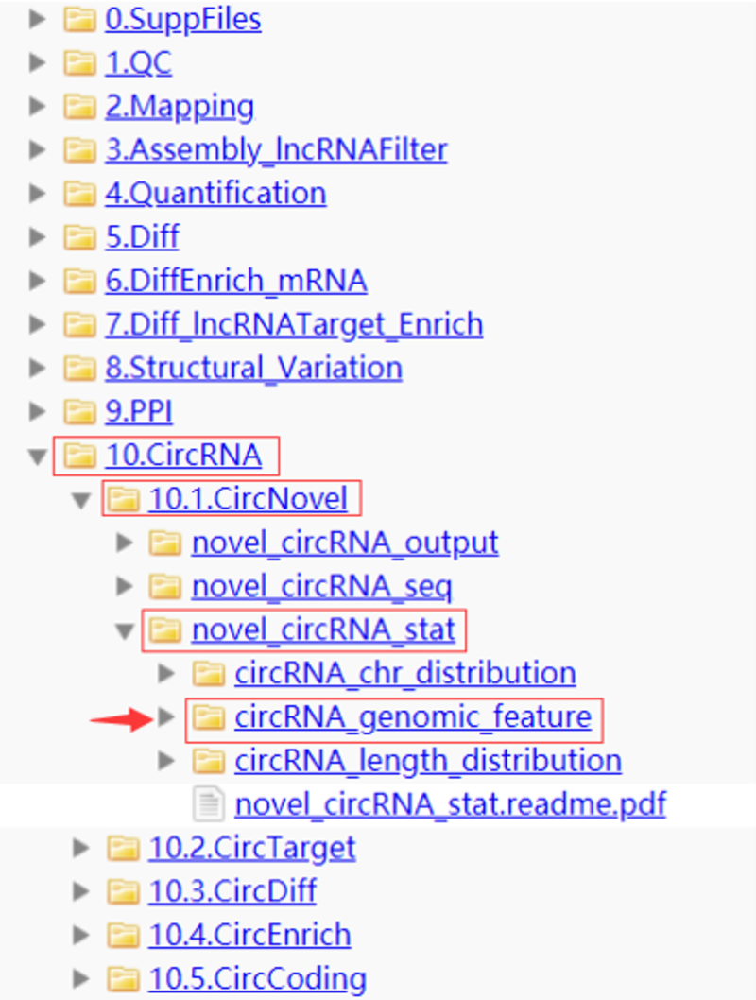
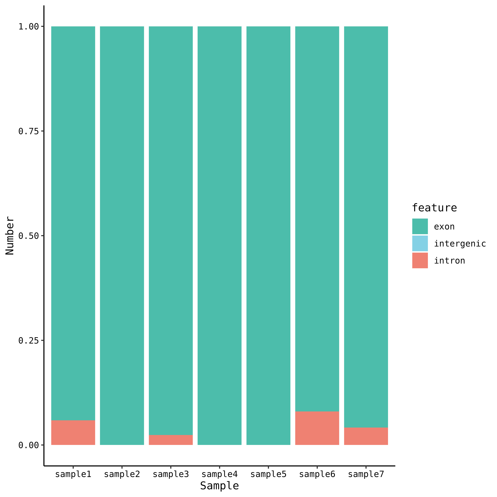
图3.4 circRNA 的来源
横坐标：样本名称；纵坐标：circRNA来源类型占比
3.4 CircRNA 染色体分布
对各个样品所有比对到基因组上各条染色体的circRNA进行密度统计，用circos作图查看每条染色体上circRNA的分布情况
circRNA染色体分布图见结果文件：10.CircRNA/10.1.CircNovel/novel_circRNA_stat/circRNA_chr_distribution，如下图所示。
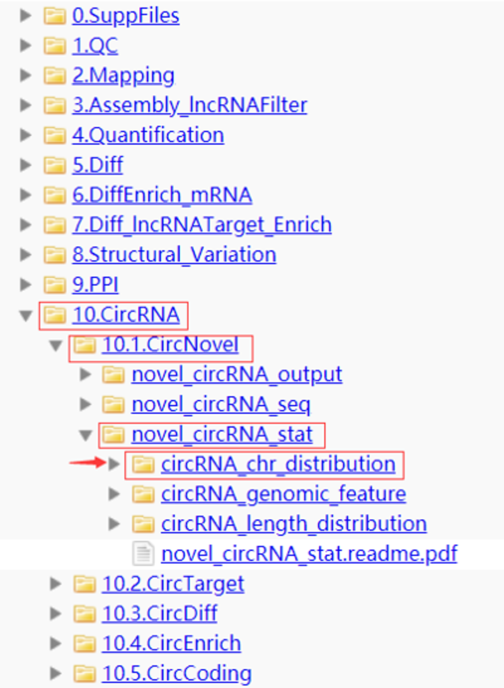


图3.5 各染色体circRNA密度分布图
每个样品所有circRNA在染色体上的密度分布circos图。外圈为染色体位置图，圈外数字为染色体编号，用不同颜色区分不同的染色体，刻度反应染色体坐标，单位是M（百万），内圈反应染色体每个坐标区间的circRNA密度，展示方式是散点图，每个点代表染色体上一个坐标区间，数值由外向内减少。
3.5 CircRNA 鉴定讲解视频
链接: https://pan.baidu.com/s/1Fxww7S3Lr7I7ExiQvPza9w 提取码: bwzv
4 CircRNA 定量分析(结果文件夹: Results/CircRNA/CircDiff/normalized_expression)
定量是表达差异显著性分析的基础，对各样本中已知和新 circRNA 进行表达量的统计，并用 TPM（Zhou et al., 2010）进行表达量归一化处理。
公式：归一化表达量 = (readCount*1,000,000)/libsize 注：libsize：样品 circRNA readcount 之和
4.1 CircRNA 定量结果
circRNA定量见结果文件：10.CircRNA/10.3.CircDiff/normalized_expression/Readcount_TPM.xls，如下图所示。
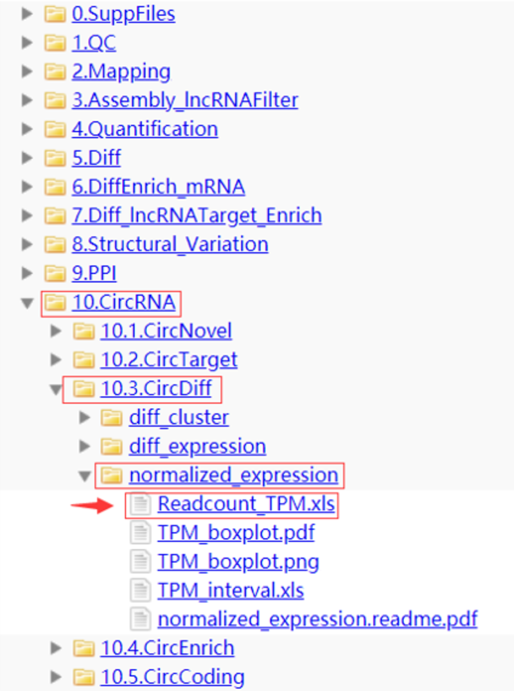
CircRNA 定量结果如下：
表4.1 circRNA表达水平统计表（部分)
| circRNA | sample1_readcount | sample2_readcount | sample3_readcount | sample4_readcount | sample5_readcount | sample6_readcount | sample7_readcount | sample1_tpm | sample2_tpm | sample3_tpm | sample4_tpm | sample5_tpm | sample6_tpm | sample7_tpm |
|---|---|---|---|---|---|---|---|---|---|---|---|---|---|---|
| hsa_circ_0000023 | 0 | 0 | 3 | 0 | 0 | 0 | 0 | 0 | 0 | 6507.59219088937 | 0 | 0 | 0 | 0 |
| hsa_circ_0000024 | 3 | 0 | 0 | 4 | 0 | 0 | 0 | 37974.6835443038 | 0 | 0 | 40816.3265306122 | 0 | 0 | 0 |
| hsa_circ_0000042 | 0 | 0 | 6 | 0 | 0 | 0 | 0 | 0 | 0 | 13015.1843817787 | 0 | 0 | 0 | 0 |
| hsa_circ_0000048 | 0 | 2 | 0 | 0 | 0 | 0 | 0 | 0 | 30769.2307692308 | 0 | 0 | 0 | 0 | 0 |
| hsa_circ_0000069 | 5 | 0 | 13 | 0 | 0 | 3 | 4 | 63291.1392405063 | 0 | 28199.5661605206 | 0 | 0 | 25862.0689655172 | 22727.2727272727 |
| hsa_circ_0000095 | 13 | 24 | 87 | 22 | 16 | 24 | 23 | 164556.962025316 | 369230.769230769 | 188720.173535792 | 224489.795918367 | 125984.251968504 | 206896.551724138 | 130681.818181818 |
| hsa_circ_0000160 | 2 | 0 | 4 | 2 | 3 | 4 | 5 | 25316.4556962025 | 0 | 8676.78958785249 | 20408.1632653061 | 23622.0472440945 | 34482.7586206897 | 28409.0909090909 |
| hsa_circ_0000182 | 0 | 0 | 4 | 0 | 0 | 0 | 0 | 0 | 0 | 8676.78958785249 | 0 | 0 | 0 | 0 |
| hsa_circ_0000344 | 0 | 2 | 4 | 3 | 2 | 0 | 0 | 0 | 30769.2307692308 | 8676.78958785249 | 30612.2448979592 | 15748.031496063 | 0 | 0 |
| hsa_circ_0000347 | 4 | 0 | 7 | 2 | 2 | 3 | 5 | 50632.9113924051 | 0 | 15184.3817787419 | 20408.1632653061 | 15748.031496063 | 25862.0689655172 | 28409.0909090909 |
(1) 第1列——“circRNA” ID
(2) 第2到n+1列——“样本名”，分别代表样本1到n的readcount。
(3) 第 n+2 到 2n+1 列——“样本名(TPM)”，分别代表样本 1 到 n 的 readcount 经过 TPM 标准化后的值
4.2 CircRNA 表达水平分布
计算各样本所有circRNA的表达值TPM，通过TPM箱线图整体展示样品的基因表达模式，如图所示:
各样本所有circRNA表达TPM箱线图见结果文件：10.CircRNA/10.3.CircDiff/normalized_expression/TPM_boxplot.png，如下图所示。
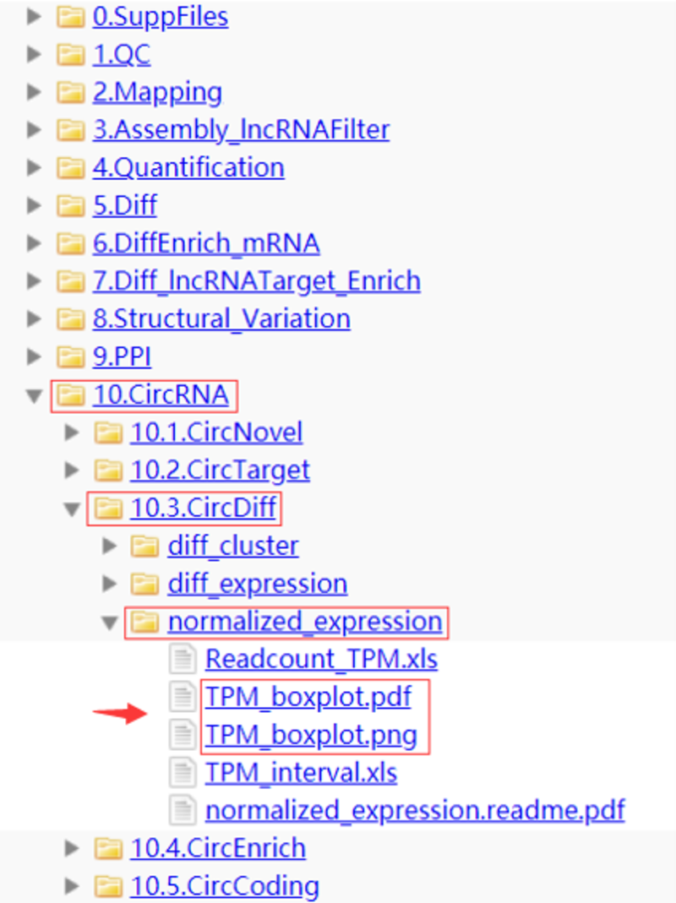
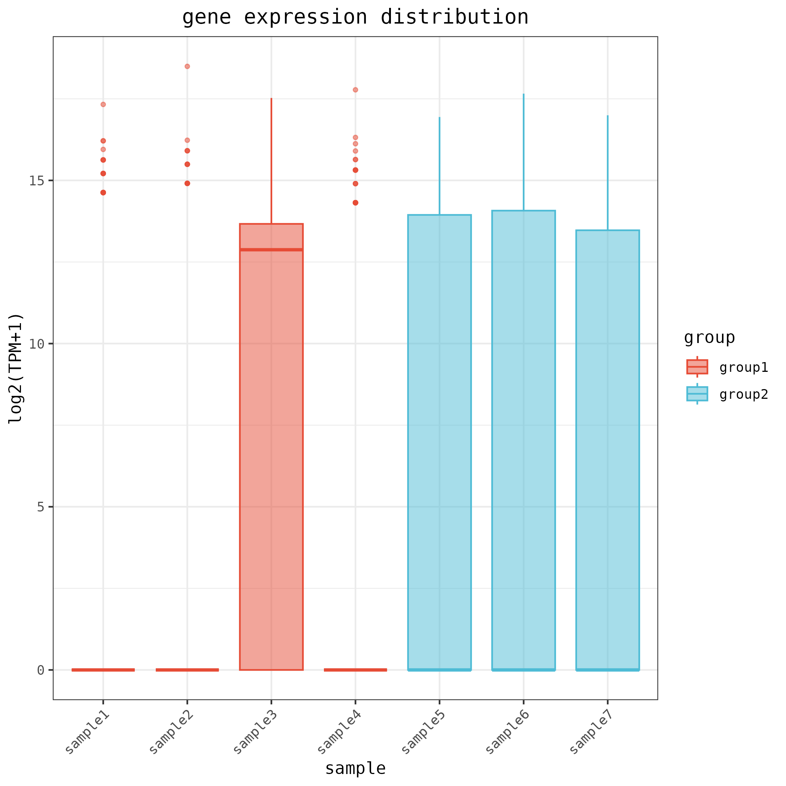
图4.1 TPM箱线图
不同样本表达水平盒形图，其中横坐标为样品名称，纵坐标为log10（TPM+1），每个区域的盒形图对应五个统计量（从上而下分别为最大值、上四分位数、中值、下四分位数和最小值）
5 CircRNA 差异分析(结果文件夹: Results/CircRNA/CircDiff/diff_expression)
CircRNA差异表达的输入数据为CircRNA表达水平分析中得到的readcounts数据。对于有生物学重复的样品，分析我们采用基于负二项分布的DESeq2[24]进行分析；对于无生物学重复的样品，DEGseq[25]会采用TMM算法对readcount数据进行标准化处理，然后进行差异分析。
5.1 差异 circRNA 分析结果
结题报告中只显示一组比较组合的circRNA差异表达分析部分结果，完整信息见结果文件夹：10.CircRNA/10.3.CircDiff/diff_expression/Group2_vs_Group1/Group2_vs_Group1.DE.xls，如下图所示：
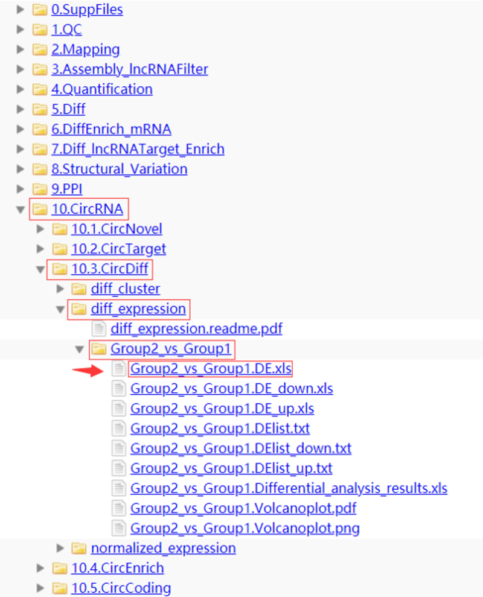
表5.1 circRNA表达差异分析结果（部分)
| circRNA | sample1_readcount | sample5_readcount | log2FoldChange | pvalue | padj | significant |
|---|---|---|---|---|---|---|
| hsa_circ_0000069 | 5.94508603159268 | 1.38777878078145e-17 | 5.61852964591483 | 0.0409645848047624 | 0.637254901960784 | TRUE |
| hsa_circ_0001522 | 1.38777878078145e-17 | 4.20220317242755 | -5.13831237633336 | 0.13984461709212 | 0.637254901960784 | FALSE |
| hsa_circ_0001772 | 2.38738808990422 | 8.41837403143501 | -1.77769438607231 | 0.191850839783707 | 0.637254901960784 | FALSE |
| hsa_circ_0000024 | 3.57325085029462 | 1.38777878078145e-17 | 4.90100902177519 | 0.264705882352941 | 0.637254901960784 | FALSE |
| hsa_circ_0001451 | 1.38777878078145e-17 | 2.51566905787954 | -4.42839999506616 | 0.264705882352941 | 0.637254901960784 | FALSE |
| hsa_circ_0007308 | 1.38777878078145e-17 | 2.51566905787954 | -4.42839999506616 | 0.264705882352941 | 0.637254901960784 | FALSE |
| hsa_circ_0014606 | 1.38777878078145e-17 | 2.51566905787954 | -4.42839999506616 | 0.264705882352941 | 0.637254901960784 | FALSE |
| hsa_circ_0023919 | 1.38777878078145e-17 | 2.51566905787954 | -4.42839999506616 | 0.264705882352941 | 0.637254901960784 | FALSE |
| hsa_circ_0058493 | 1.38777878078145e-17 | 3.35894454195796 | -4.82658877745667 | 0.264705882352941 | 0.637254901960784 | FALSE |
| hsa_circ_0085458 | 1.38777878078145e-17 | 2.51566905787954 | -4.42839999506616 | 0.264705882352941 | 0.637254901960784 | FALSE |
5.2 差异 circRNA 结果展示
用火山图可以推断差异circRNA的整体分布情况，从差异倍数(Fold change)和校正后的显著水平（padj/qvalue）两个水平进行评估，对差异circRNA进行筛选。
当样品有生物学重复时，默认差异circRNA的筛选条件为：padj < 0.05,(若qvalue < 0.05筛选差异基因过少则使用pvalue < 0.05进行差异筛选)。
当样品无生物学重复时，差异circRNA数目会偏多，为了控制假阳性率，需qvalue结合foldchange来筛选，默认差异circRNA筛选条件为：qvalue<0.05 && | log2(foldchange)|>1。
circRNA差异表达火山图见结果文件：10.CircRNA/10.3.CircDiff/diff_expression/Group2_vs_Group1/Group2_vs_Group1.Volcanoplot.png，如下图所示。
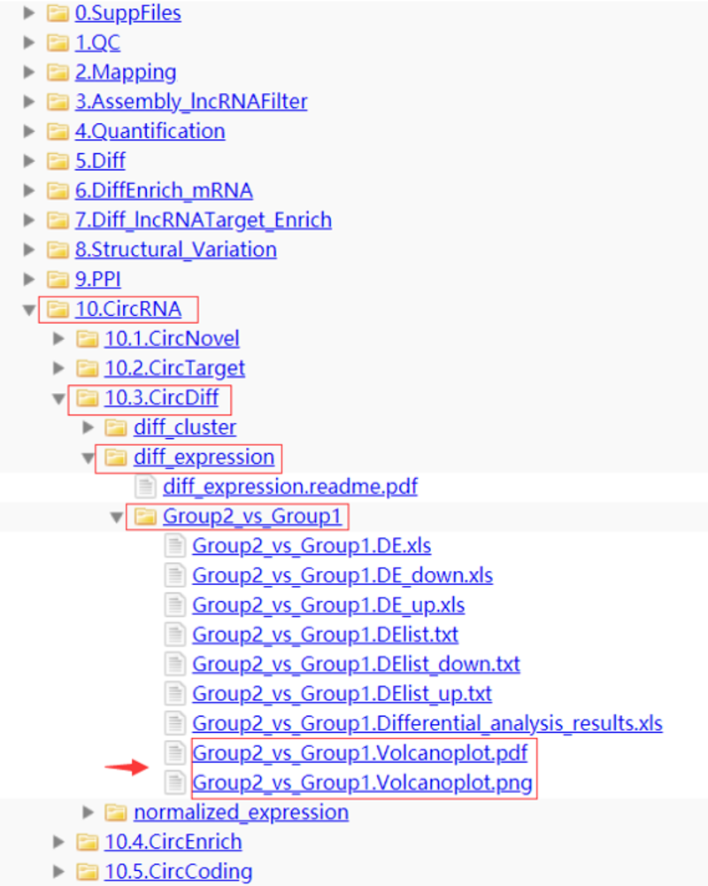


{kind=link}
{kind=link}
{kind=link}
{kind=link}
{kind=link}
{kind=link}
{kind=link}
图5.1 差异circRNA火山图
横坐标代表circRNA在不同实验组中/不同样品中表达倍数(log2FoldChange)变化，纵坐标代表circRNA表达量变化的统计学显著程度。当样品有生物学重复时，circRNA差异>筛选阈值为qvalue(默认)或pvalue，当样品为无生物学重复时，需qvalue(默认)/pvalue结合log2Foldchange(绝对值>1)来筛选。图中的散点代表各个circRNA，蓝色圆点表示无显著性差异的circRNA，红 >色圆点表示显著上调的差异circRNA，绿色圆点表示显著下调的差异circRNA。
5.3 差异 circRNA 聚类分析
差异circRNA聚类分析用于判断不同实验条件下差异circRNA表达量的聚类模式。 每个比较组合都会得到一个差异circRNA集，将所有比较组合的差异circRNA集的并集在每个实验组/样品中的的TPM值，用于层次聚类分析，K-means聚类分析和SOM聚类分析见结果文件夹：10.CircRNA/10.3.CircDiff/diff_cluster/。
circRNA差异表达聚类图见结果文件：10.CircRNA/10.3.CircDiff/diff_cluster/Hclust_cluster/Hcluster_heatmap.png，如下图所示。
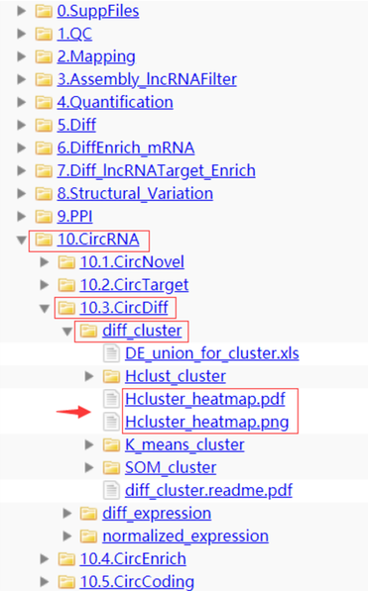
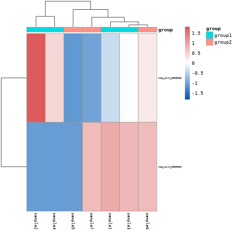
横坐标为样本，纵坐标为差异基因，左侧根据表达相似程度对基因进行聚类，上方根据表达谱的相似程度对每个样本进行聚类，由蓝至红表达量逐渐上调，数字为均一化后的相对表达量。
5.4 差异 circRNA 样本间公共及特有的 circRNA 维恩图
当比较组合数大于等于 2 个小于 5 个时，可以将各组比较得到的差异 circRNA 个数进行统计，画成维恩图，直观展现出各个比较组合共有的及特有的差异 circRNA 数目（如果只有两个样品时，则进行两个样本之间的venn 图绘制）
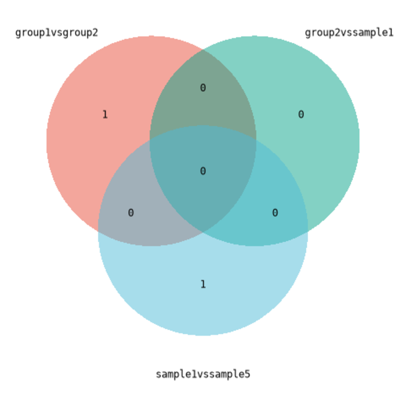
图5.3 差异circRNA维恩图
大圆圈代表各个比较组合，每个大圆圈中的数字之和代表该比较组合的差异circRNA总个数，圆圈交叠的部分表示组合之间共有的差异circRNA个数（只有两个样品时，每个大圆圈中的数字代表在这个样本中表达的circRNA,圆圈交叠的部分代表样本间共表达的circRNA.）
5.5 CircRNA 定量差异分析讲解视频
链接: https://pan.baidu.com/s/1hdUUSGoUnOTttaN6Prb9lg 提取码: jpvy
6 差异 circRNA 来源基因富集分析(结果文件夹: Results/CircRNA/CircEnrich)
得到各组比较间的差异表达 circRNA 后，根据 circRNA 与其来源基因间的对应关系，对每组差异表达 circRNA 的来源基因的集合分别进行 Gene Ontology 和 KEGG 富集分析。结题报告中只显示部分富集分析结果，更多信息见结果文件夹：10.CircRNA/10.4.CircEnrich。
6.1 GO 富集结果
Gene Ontology（简称 GO，http://www.geneontology.org/）是基因功能国际标准分类体系。GO 富集分析方法为 GOseq [14-16]，此方法基于 Wallenius non-central hyper-geometric distribution，相对于普通的 Hyper-geometric distribution，此分布的特点是从某个类别中抽取个体的概率与从某个类别之外抽取一个个体的概率是不同的，这种概率的不同是通过对基因长度的偏好性进行估计得到的，从而能更为准确地计算出 GO term 被来源基因富集的概率。结果如下表所示：
circRNA来源基因GO富集结果见结果文件：10.CircRNA/10.4.CircEnrich/GO_enrichment，如下图所示。
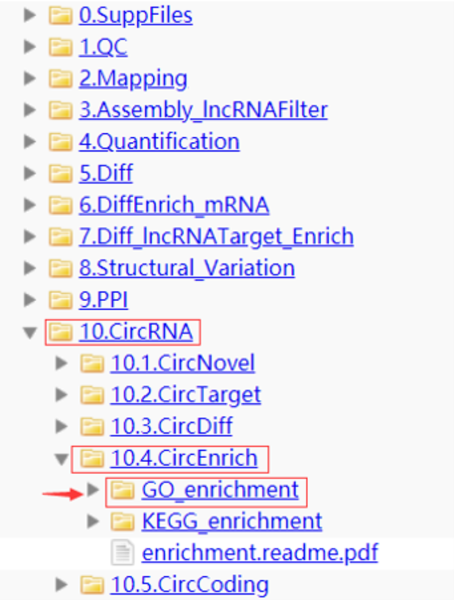
表6.1 样品中来源基因的 Gene Ontology 富集列表（部分）
| Category | GOID | Description | GeneRatio | BgRatio | pvalue | padj | geneID | geneName | Count |
|---|---|---|---|---|---|---|---|---|---|
| BP | GO:0006139 | nucleobase-containing compound metabolic process | 9/21 | 9/21 | 1 | 0.0001 | ENSG00000106261/ENSG00000198900/ENSG00000108510/ENSG00000062194/ENSG00000114166/ENSG00000113643/ENSG00000140830/ENSG00000109674/ENSG00000100393 | ZKSCAN1/TOP1/MED13/GPBP1/KAT2B/RARS/TXNL4B/NEIL3/EP300 | 9 |
| BP | GO:0006351 | transcription, DNA-templated | 5/21 | 5/21 | 1 | 0.00001 | ENSG00000106261/ENSG00000108510/ENSG00000062194/ENSG00000114166/ENSG00000100393 | ZKSCAN1/MED13/GPBP1/KAT2B/EP300 | 5 |
| BP | GO:0006355 | regulation of transcription, DNA-templated | 5/21 | 5/21 | 1 | 0.0031 | ENSG00000106261/ENSG00000108510/ENSG00000062194/ENSG00000114166/ENSG00000100393 | ZKSCAN1/MED13/GPBP1/KAT2B/EP300 | 5 |
| BP | GO:0006725 | cellular aromatic compound metabolic process | 9/21 | 9/21 | 1 | 0.3451 | ENSG00000106261/ENSG00000198900/ENSG00000108510/ENSG00000062194/ENSG00000114166/ENSG00000113643/ENSG00000140830/ENSG00000109674/ENSG00000100393 | ZKSCAN1/TOP1/MED13/GPBP1/KAT2B/RARS/TXNL4B/NEIL3/EP300 | 9 |
| BP | GO:0006807 | nitrogen compound metabolic process | 15/21 | 15/21 | 1 | 0.8771 | ENSG00000106261/ENSG00000198900/ENSG00000108510/ENSG00000024048/ENSG00000062194/ENSG00000088179/ENSG00000114166/ENSG00000113643/ENSG00000107643/ENSG00000136169/ENSG00000140830/ENSG00000109674/ENSG00000100393/ENSG00000143776/ENSG00000151292 | ZKSCAN1/TOP1/MED13/UBR2/GPBP1/PTPN4/KAT2B/RARS/MAPK8/SETDB2/TXNL4B/NEIL3/EP300/CDC42BPA/CSNK1G3 | 15 |
| BP | GO:0006996 | organelle organization | 5/21 | 5/21 | 1 | 0.0661 | ENSG00000127483/ENSG00000198900/ENSG00000159023/ENSG00000136169/ENSG00000100393 | HP1BP3/TOP1/EPB41/SETDB2/EP300 | 5 |
| BP | GO:0008150 | biological_process | 21/21 | 21/21 | 1 | 0.0000061 | ENSG00000106261/ENSG00000127483/ENSG00000198900/ENSG00000108510/ENSG00000139132/ENSG00000159023/ENSG00000024048/ENSG00000062194/ENSG00000088179/ENSG00000114166/ENSG00000162769/ENSG00000113643/ENSG00000125257/ENSG00000107643/ENSG00000136169/ENSG00000140830/ENSG00000109674/ENSG00000100393/ENSG00000174442/ENSG00000143776/ENSG00000151292 | ZKSCAN1/HP1BP3/TOP1/MED13/FGD4/EPB41/UBR2/GPBP1/PTPN4/KAT2B/FLVCR1/RARS/ABCC4/MAPK8/SETDB2/TXNL4B/NEIL3/EP300/ZWILCH/CDC42BPA/CSNK1G3 | 21 |
| BP | GO:0008152 | metabolic process | 15/21 | 15/21 | 1 | 0.4441 | ENSG00000106261/ENSG00000198900/ENSG00000108510/ENSG00000024048/ENSG00000062194/ENSG00000088179/ENSG00000114166/ENSG00000113643/ENSG00000107643/ENSG00000136169/ENSG00000140830/ENSG00000109674/ENSG00000100393/ENSG00000143776/ENSG00000151292 | ZKSCAN1/TOP1/MED13/UBR2/GPBP1/PTPN4/KAT2B/RARS/MAPK8/SETDB2/TXNL4B/NEIL3/EP300/CDC42BPA/CSNK1G3 | 15 |
| BP | GO:0009058 | biosynthetic process | 6/21 | 6/21 | 1 | 0.3331 | ENSG00000106261/ENSG00000108510/ENSG00000062194/ENSG00000114166/ENSG00000113643/ENSG00000100393 | ZKSCAN1/MED13/GPBP1/KAT2B/RARS/EP300 | 6 |
| BP | GO:0009059 | macromolecule biosynthetic process | 6/21 | 6/21 | 1 | 0.031 | ENSG00000106261/ENSG00000108510/ENSG00000062194/ENSG00000114166/ENSG00000113643/ENSG00000100393 | ZKSCAN1/MED13/GPBP1/KAT2B/RARS/EP300 | 6 |
得到上述列表后，统计被富集的各个 GO term 中的基因数，以柱状图的形式展示，如下图所示：
图6.1 来源基因 GO 富集柱状图
横坐标为 GO 三个大类的下一层级的 GO term，纵坐标为注释到该 term 下（包括该 term 的子 term）的来源基因个数，及其个数占被注释上的来源基因总数的比例。3 种不同分类表示 GO term 的三种基本分类（从左往右依次为生物学过程，细胞成分，分子功能）。
6.2 KEGG 富集结果
在生物体内，不同基因相互协调行使其生物学功能，通过 Pathway 显著性富集能确定来源基因参与的最主要生化代谢途径和信号转导途径。KEGG（Kyoto Encyclopedia of Genes and Genomes）是有关 Pathway 的主要公共数据库[15]。Pathway 显著性富集分析以 KEGG Pathway 为单位，应用超几何检验，找出与整个基因组背景相比，在来源基因中显著性富集的 Pathway。该分析的计算公式如下:

其中，N 为所有基因中具有 Pathway 注释的基因数目；n 为 N 中来源基因的数目；M 为所有基因中注释为某特定 Pathway 的基因数目；m 为注释为某特定 Pathway 的来源基因数目。用 BH 方法对 p-value 进行校正，得到的校正后的 p-value 值越小代表越显著。这里将值 < 0.05 的 Pathway 定义为在来源基因中显著富集的 Pathway。
circRNA来源基因KEGG富集结果见结果文件：10.CircRNA/10.4.CircEnrich/KEGG_enrichment，如下图所示。
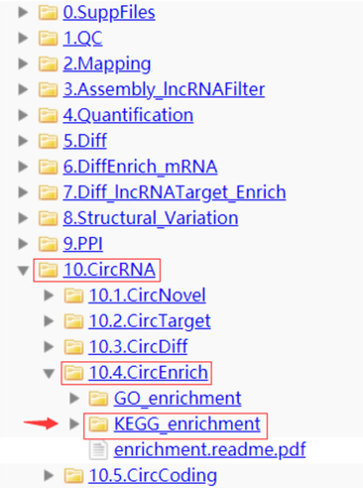
表6.2 来源基因 KEGG 显著性富集列表
| KEGGID | Description | GeneRatio | BgRatio | pvalue | padj | geneID | geneName | keggID | Count |
|---|---|---|---|---|---|---|---|---|---|
| hsa01100 | Metabolic pathways | 7/31 | 7/31 | 0.04 | 0.05 | ENSG00000214960/ENSG00000100330/ENSG00000078142/ENSG00000033627/ENSG00000143797/ENSG00000136169/ENSG00000107789 | ISPD/MTMR3/PIK3C3/ATP6V0A1/MBOAT2/SETDB2/MINPP1 | hsa:729920/hsa:8897/hsa:5289/hsa:535/hsa:129642/hsa:83852/hsa:9562 | 7 |
| hsa04140 | Autophagy - animal | 5/31 | 5/31 | 0.01 | 0.07 | ENSG00000100330/ENSG00000078142/ENSG00000023287/ENSG00000062716/ENSG00000107643 | MTMR3/PIK3C3/RB1CC1/VMP1/MAPK8 | hsa:8897/hsa:5289/hsa:9821/hsa:81671/hsa:5599 | 5 |
| hsa05022 | Pathways of neurodegeneration - multiple diseases | 5/31 | 5/31 | 0.0003 | 0.001 | ENSG00000078142/ENSG00000132388/ENSG00000023287/ENSG00000104133/ENSG00000107643 | PIK3C3/UBE2G1/RB1CC1/SPG11/MAPK8 | hsa:5289/hsa:7326/hsa:9821/hsa:80208/hsa:5599 | 5 |
来源基因 KEGG 富集散点图是 KEGG 富集分析结果的图形化展示方式。在此图中，KEGG 富集程度通过 Rich factor、Qvalue 和富集到此通路上的基因个数来衡量。其中 Rich factor 指差异表达的基因中位于该 pathway 条目的基因数目与所有有注释基因中位于该 pathway 条目的基因总数的比值。Rich factor 越大，表示富集的程度越大。Qvalue 是做过多重假设检验校正之后的 p-value，Qvalue 的取值范围为 [0,1]，越接近于 0 表示富集越显著。我们挑选了富集最显著的 20 条 pathway 条目在该图中进行展示，若富集的 pathway 条目不足 20 条，则全部展示。
图6.2 来源基因 KEGG 富集散点图
纵轴表示 pathway 名称，横轴表示 Rich factor，点的大小表示此 pathway中来源基因个数多少，而点的颜色对应于不同的 Qvalue 范围 。
将每条有来源基因部分富集通路的代谢图展示出来，如下图，其中的小方框代表蛋白，红色的小方框代表来源基因对应的蛋白，鼠标悬停于该节点，会弹出相应的来源基因 id。以上步骤可脱机实现，如连接互联网，点击各个节点，可以连接到 KEGG 官方数据库中各个 KO 的具体信息页。
图6.3 来源基因KEGG富集通路图
7 CircRNA 靶向 miRNA 位点分析(结果文件夹: Results/CircRNA/CircTarget)
circRNA 可以通过与 miRNA 结合的方式抑制 miRNA 的功能[26]。因此，对鉴定的 circRNA 进行 miRNA 结合位点分析，有助于进一步研究 circRNA 的功能。对于动物和植物，本流程使用 miRanda 软件预测剪切后的 circRNA 的 miRNA 的结合位点。
circRNA靶向 miRNA 位点分析结果见结果文件：10.CircRNA/10.2.CircTarget，如下图所示。
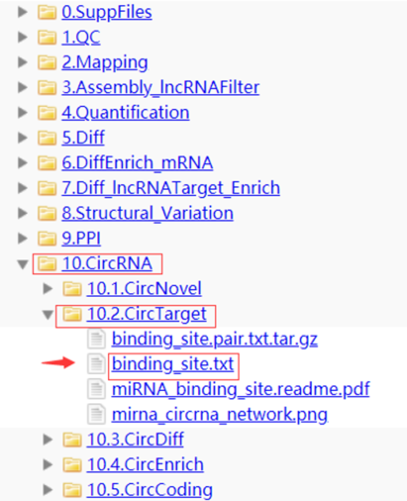
CircRNA-miRNA 结合位点结果如下：
表7.1 CircRNA 靶向 miRNA 位点统计表（部分）
| COL_1 | COL_2 | COL_3 | COL_4 | COL_5 | COL_6 | COL_7 | COL_8 | COL_9 | COL_10 |
|---|---|---|---|---|---|---|---|---|---|
| >>hsa-miR-22-5p | novel_circ_0000184_full_seq | 154.00 | -15.45 | 154.00 | -15.45 | 661 | 22 | 261 | 125 |
| >>hsa-miR-22-5p | novel_circ_0000183_full_seq | 154.00 | -15.45 | 154.00 | -15.45 | 663 | 22 | 261 | 125 |
| >>hsa-miR-26b-3p | novel_circ_0000003_full_seq | 155.00 | -19.77 | 155.00 | -19.77 | 917 | 21 | 334 | 211 |
| >>hsa-miR-28-5p | novel_circ_0000003_full_seq | 149.00 | -19.51 | 149.00 | -19.51 | 980 | 22 | 334 | 151 |
| >>hsa-miR-29a-5p | novel_circ_0000184_full_seq | 151.00 | -16.59 | 151.00 | -16.59 | 1018 | 22 | 261 | 183 |
| >>hsa-miR-29a-5p | novel_circ_0000183_full_seq | 151.00 | -16.59 | 151.00 | -16.59 | 1020 | 22 | 261 | 183 |
| >>hsa-miR-92a-2-5p | novel_circ_0000111_full_seq | 151.00 | -20.68 | 151.00 | -20.68 | 1268 | 22 | 261 | 54 |
| >>hsa-miR-103a-2-5p | novel_circ_0000186_full_seq | 147.00 | -12.10 | 147.00 | -12.10 | 1658 | 23 | 243 | 93 |
| >>hsa-miR-103a-1-5p | novel_circ_0000186_full_seq | 147.00 | -15.95 | 147.00 | -15.95 | 1700 | 23 | 243 | 93 |
| >>hsa-miR-16-2-3p | novel_circ_0000003_full_seq | 154.00 | -15.64 | 154.00 | -15.64 | 1820 | 22 | 334 | 24 |
| >>hsa-miR-198 | novel_circ_0000151_full_seq | 152.00 | -23.52 | 152.00 | -23.52 | 1969 | 22 | 270 | 91 |
根据 miRNA 结合位点的预测结果作出 miRNA-circRNA 的调控网络。如果网络过大（miRNA 与 circRNA 的总数多于 1000 个），则只展示部分调控网络，否则全部展示：
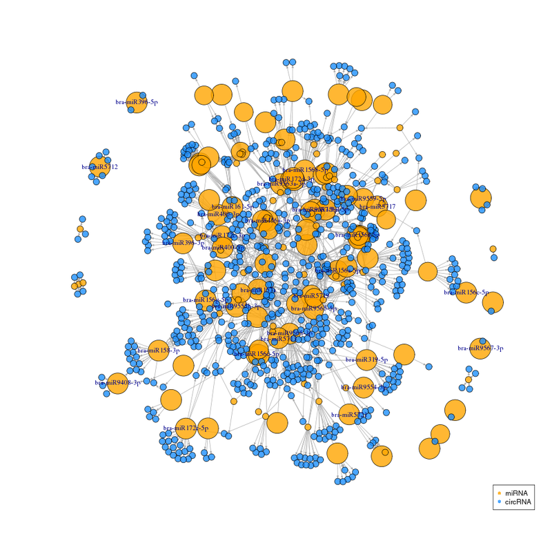
图7.1 miRNA-circRNA 调控网络示例图
橙色顶点表示 miRNA，蓝色顶点表示 circRNA；对于全部展示的调控网络，顶点的大小表示通过该顶点的调控通路数量。
8 CircRNA 编码潜能预测(结果文件夹: Results/CircRNA/CircCoding)
对于环状RNA，早在1995年，ChenCY在SCIENCE就发表了文章证明人工合成的带有核糖体进入位点（IRES）的环状RNA是可以翻译的，并提出了体内环状RNA可翻译的假说。近几年随着circRNA研究的兴起，目前已经积累的大量的circRNA 数据供 circRNA 编码潜能研究。2017年开始，大量关于circRNA 编码的蛋白的文章涌现，影响因子普遍在10分以上。
由于circRNA不存在5'帽结构，目前关circRNA编码潜能预测主要是找寻circRNA上是否有IRES位点和开放阅读框ORF，可以不依赖5'帽结构而启动翻译，然后进行编码验证和后续的circRNA 功能分析。
目前预测IRES的工具多为在线预测工具。IRESfinder是南京航空航天大学宋晓峰教授团队2018年研发的一款IRES最新预测工具。IRESfinder分析原理是基于logit model的预测工具，基于19种k-mer参数，通过试验验证的583个IRES元件进行机器学习训练。经过10层交叉验证，ROC曲线分析的AUC值可达到0.825，精度达到80%，准确度达到73%[27]。
circRNA编码潜能预测结果见结果文件：10.CircRNA/10.5.CircCoding/Circ_coding_stat.xls，如下图所示。
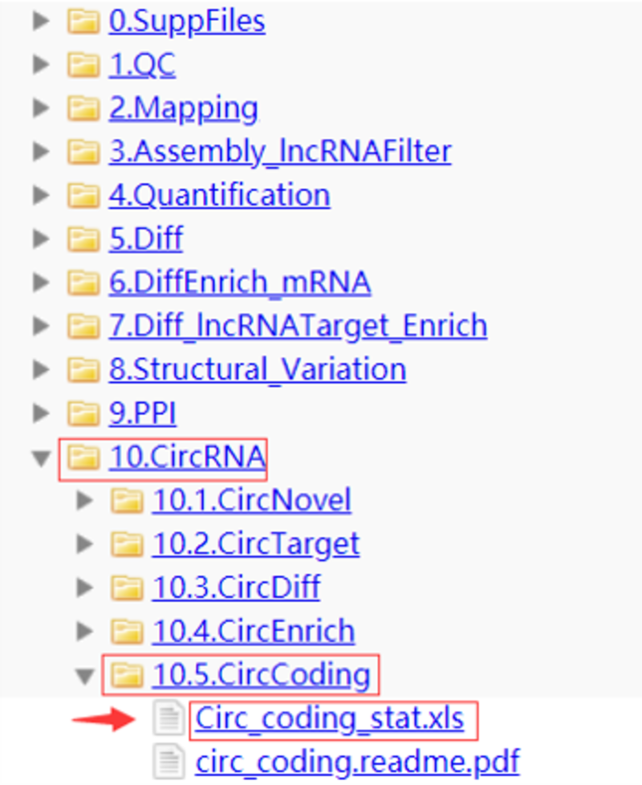
CircRNA 编码潜能预测结果如下：
表8.1 CircRNA 编码潜能预测统计表（部分）
| Circ_ID | IRES_Score | CPC2 | CNCI | PFAM |
|---|---|---|---|---|
| hsa_circ_0003472 | 0.9508621873940262 | -- | -- | True |
| hsa_circ_0021156 | 0.8945297837749284 | -- | -- | True |
| hsa_circ_0001801 | 0.8934499868142117 | -- | -- | True |
| hsa_circ_0043837 | 0.8847030817774263 | -- | True | True |
| hsa_circ_0000973 | 0.8730503293963128 | -- | -- | -- |
| hsa_circ_0003784 | 0.8577933892550506 | -- | -- | -- |
| hsa_circ_0000095 | 0.8483669744220714 | -- | -- | True |
| hsa_circ_0007308 | 0.8389034764568412 | -- | True | True |
| hsa_circ_0004689 | 0.8354555021308034 | -- | -- | -- |
| hsa_circ_0005720 | 0.8353354465574053 | -- | -- | True |
(1) Circ_ID : circRNA id
(2) IRES_Score : IRESfinder 软件预测IRES分数，分数>0.5具有IRES元件，分数越高，准确度越高
(3) CPC ：CPC 软件鉴定 circRNA 序列是否具有编码潜能
(4) CNCI : CNCI软件鉴定 circRNA 序列是否具有编码潜能
(5) PFAM : PFAM 软件鉴定 circRNA 序列是否具有编码潜能
五、备注
1 结果文件解压方法
| 结果文件解压方法 | ||
|---|---|---|
| *.tar.gz形式的压缩文件： | Unix/Linux/Mac用户 | 使用tar -zxvf *.tar.gz命令 |
| Windows用户 | 使用解压缩软件如WinRAR、7-Zip等 | |
| *.gz形式的压缩文件： | Unix/Linux/Mac用户 | 使用命令gzip -d *.gz命令 |
| Windows用户 | 使用解压缩软件如WinRAR、7-Zip等 | |
| *.zip形式的压缩文件： | Unix/Linux/Mac用户 | 使用命令unzip *.zip命令 |
| Windows用户 | 使用解压缩软件如WinRAR、7-Zip等 | |
2 结果文件格式说明
| 结果文件格式说明 | ||
|---|---|---|
| *.fasta | 序列文件，fasta格式，一般为基因序列或者基因组序列。因文件一般较大，打开较为困难，为您提供了sampled*.fasta文件（部分*.fasta中的序列），方便您查看文件格式。 | unix/Linux/Mac用户使用 less 或 more 命令； |
| windows使用高级文本编辑器Editplus/Notepad++等。 | ||
| *.fq/fastq | 序列文件，fastq格式，一般为reads序列；因文件一般较大，打开较为困难。 | unix/Linux/Mac用户使用 less 或 more 命令； |
| windows用户使用高级文本编辑器Editplus/Notepad++等。 | ||
| *.xls，*.txt | 结果数据表格文件；文件以制表符（Tab）分隔。 | unix/Linux/Mac用户使用 less 或 more 命令； |
| windows用户使用高级文本编辑器Editplus/Notepad++ 等，也可以用Microsoft Excel打开。 | ||
| *.png | 结果图像文件；是位图，无损压缩。 | unix/Linux/Mac用户使用display命令打开。 |
| windows用户可以使用图片浏览器打开，如photoshop等。 | ||
| 结果图像文件；是矢量图，可以放大和缩小而不失真，方便用户查看和编辑处理，可使用Adobe Illustrator进行图片编辑，用于文章发表等。 | windows/Mac用户可以使用Adobe Reader/福昕阅读器/网页>浏览器等打开，unix/Linux用户使用evince命令打开。 | |
3 高级个性化分析列表和说明
| 分析条目 | 交付结果（信息） | 分析条件（信息） | ||
|---|---|---|---|---|
| WGCNA分析 | 模块层次聚类图，模块间相关热性图，模块基因聚类热图，模块基因表达图，样品表达模式热图 | 建议25个以上样品（8-15也可以，基于皮尔森） | ||
| GSEA 分析 | GSEA富集结果图、GSEA富集基因热图 | 差异组合超过10个（物种为人小鼠）；根据表达趋势富集；须有表达量的注释，GO和KEGG；针对所有基因，不只是差异基因 | ||
| STEM 分析 | 基因表达模块图，模块内基因表达折线图 | 时间点在4-8个之间 | ||
| RNA编辑分析 | 编辑位点在染色体上分布，RNA编辑类型分布，RNA编辑类型堆积柱状图，RNA编辑位点在不同功能域的分布，编辑位点在不同功能域的堆积柱状图 | 需要链特异性建库 | ||
| 个性化热图绘制 | 多样品差异热图分析，展示纵向标签的热图 | 多样品两两比较（多阶段性或者多时期样品比对分析） | ||
| 个性化circos图绘制 | 差异基因在染色体上的分布，多信息数据可视化circos图 | 针对差异基因 | ||
| 维诺图分析 | 维诺图 | 几百个基因；针对于网站中有的物种可做；别的物种有参考基因组的需要提高参考基因组（有格式要求）以及GO和KEGG注释；无参也可准备相应的注释文件 | ||
| 节律基因分析 | 节律基因注释，节律基因聚类分析，节律基因GO富集分析和KEGG富集分析 | 需要有亲代，子代信息、需要时间在2天内点6个时间节点以上 | ||
| 等位基因偏向性表达（ASE）分析 | 等位基因偏向性分析表格 | 基于SNP/INDEL，有亲本和子代信息；涉及SNP尽量增加测序深度 | ||
| lncRNA Rfam家族分析 | LncRNA的Rfam注释结果，LncRNA与mRNA同源性关系预测 | |||
| 内参基因分析 | NormFinder筛选出的内参基因 | 2个样品以上 | ||
| 疾病癌症队列分子分型 | 癌症队列分子分型结果 | 20个以上样品（多样本变化差异）；没经过人为筛选的几千个基因 | ||
| 疾病癌症样品病毒表达分析 | 病毒表达与癌症分型比较图 | 样品为人 | ||
| 疾病癌症样品微环境分析 | 病毒表达与癌症分型比较图 | 样品为人 | ||
| 病毒整合位点检测 | 检测病毒插入circos展示图 | 样品为人 | ||
| 疾病癌症融合基因注释 | 检测融合基因的circos展示图 | 样品为人和小鼠 | ||
4 结果文件目录列表
结果文件目录列表：HTML
5 软件说明列表
软件说明列表：PDF
5 CircRNA常见 Q&A
CircRNA Q&A：PDF
6 CircRNA Methods
Methods英文版：PDF
7 circRNA验证手段和一般研究思路
circRNA验证手段和一般研究思路：PDF
8 项目优惠券
项目优惠券申请：PDF
六、参考文献
[1] Yousefi H, Maheronnaghsh M, Molaei F, et al. Long noncoding RNAs and exosomal lncRNAs: classification, and mechanisms in breast cancer metastasis and drug resistance[J].Oncogene.2019.
[2] Kopp F, Mendell JT. Functional Classification and Experimental Dissection of Long Noncoding RNAs[J]. Cell. 2018, 172(3), 393–407. doi:10.1016/j.cell.2018.01.011.
[3] Parkhomchuk D, Borodina T, Amstislavskiy V, et al. Transcriptome analysis by strand-specific sequencing of complementary DNA[J]. Nucleic Acids Research. 2009, 37(18), e123–e123. doi:10.1093/nar/gkp596.
[4] Hardwick SA, Chen WY, Wong T, et al. Spliced synthetic genes as internal controls in RNA sequencing experiments [J]. Nature Methods. 2016, 13(9), 792–798. doi:10.1038/nmeth.3958.
[5] Vieth B, Parekh S, Ziegenhain C, et al. A systematic evaluation of single cell RNA-seq analysis pipelines [J]. Nature Communications. 2019, 10, 1–11.
[6] Kim D, Langmead B, & Salzberg SL. HISAT: a fast spliced aligner with low memory requirements [J]. Nature Methods. 12(4), 357–360. doi:10.1038/nmeth.3317.
[7] Breschi A, Gingeras TR, Guigó R. Comparative transcriptomics in human and mouse. Nature Reviews Genetics. 2017, 18(7), 425–440. doi:10.1038/nrg.2017.19.
[8] Sebastian M, Marvin J, Antigoni E, et al. Circular RNAs are a large class of animal RNAs with regulatory potency [J]. Nature. 2013, 495(7441): 333-8.
[9] Gao Y, Wang J, Zhao F. CIRI: an efficient and unbiased algorithm for de novo circular RNA identification [J]. Genome Biology. 2015, 16:4.
[10] Love, MI, Huber, W., & Anders, S. Moderated estimation of fold change and dispersion for RNA-seq data with DESeq2 [J]. Genome Biology, 15(12). 2014, doi:10.1186/s13059-014-0550-8.
[11] Wang L, Feng Z, Wang X, et al. DEGseq: an R package for identifying differentially expressed genes from RNA-seq data [J]. Bioinformatics. 2009, 26(1), 136–138. doi:10.1093/bioinformatics/btp612.
[12] Hansen TB,Jensen TI, Clausen BH, et al. Natural RNA circles function as efficient microRNA sponge [J] .Nature. 2013, 495(7441): 384-88.
[13] Zhao J, Wu J, Xu T, et al. IRESfinder: Identifying RNA internal ribosome entry site in eukaryotic cell using framed k-mer features. Journal of Genetics and Genomics. 2018, 45(7), 403–406. doi:10.1016/j.jgg.2018.07.006.